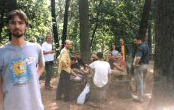
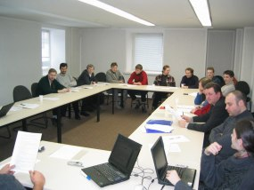

Judėjimas "Atviras kodas Lietuvai" (AKL) gimė keliolikai programuotojų švenčiant Linux dešimtąjį gimtadienį, 2001 metų vasaros pabaigoje. Tada mums kilo klausimas "kodėl kitose valstybėse atviro kodo programos įgauną vis didesnį politinį svorį, o gimtoje Lietuvoje - apie tai kalba ir domisi tik patyrę kompiuteristai?"
 2001 metų pabaigoje pradėjome kryptingai dirbti, siekdami paskatinti atviro kodo programų naudojimą Lietuvoje. Mums buvo nesuprantama, kodėl organizacijos tik skundžiasi žiauriomis akcijomis prieš neteisėtos programinės įrangos naudotojus ir toliau bijodamos dirba piratinėmis jų kopijomis. Kilo daug panašių klausimų, kurių sprendimas atrodė natūralus - naudoti laisvas, atvirojo kodo programas (kaip mes jau seniai darome), kurių licencijos yra nemokamos !
Nieko nelaukdami ėmėmės visiems įrodinėti, kad atviras kodas yra "gerai". Tada viename "aukštame" pristatyme gavome atsakymą: "gana kalbėti ir verkti, kad "ten" gerai, o "čia" blogai. Imkite ir padarykite, kad ir "čia" būtų gerai!
 Parodoje "Infobalt 2002" AKL pristatė pirmą savo blyną - "Laisvų programų CD". Šis darbas neliko neįvertintas: Infobalt rengiamame geriausio metų gaminio konkurse mūsų išleistas „Laisvų programų CD“ buvo pripažintas metų iniciatyva.
2003 vasario 23 d. buvo sukviestas steigiamasis susirinkimas, kuriame patvirtinome visuomeninės organizacijos įstatus, pasirinkome valdymo formą. Išrinkome prezidentą, 5 valdybos narius ir revizorių. Netrukus organizacija buvo oficialiai įregistruota.